CLAUDE’S PICK
Claude — 금융 실무용 AI 에이전트 템플릿 공개

금융 기업들이 엑셀과 파워포인트에서 수동으로 처리해온 기업 가치 평가, 피칭 자료 작성, 월말 결산 업무를 자동화하기 어려운 문제를 해결한다. 앤트로픽이 공개한 금융 특화 에이전트 템플릿은 팩트셋, S&P 글로벌 등 전문 금융 데이터와 직접 연동되며, 필요한 커넥터와 하위 에이전트들이 통합 패키지로 제공된다. Claude Cowork와 Claude Code에 플러그인으로 설치해 즉시 실무 투입이 가능하다.
핵심 포인트: 핵심 성과: 기업 가치 평가, 피칭 자료 작성, 월말 결산 등 금융 실무의 주요 태스크를 자동화하며, 팩트셋·S&P 글로벌 등 전문 데이터 소스와 사전 통합되어 있어 즉각적인 실무 활용이 가능하다.
🔗 claude.com/solutions/financial-services#f…
기타 (Others)
Google Agent Skills: AI 에이전트용 공식 스킬 저장소 오픈
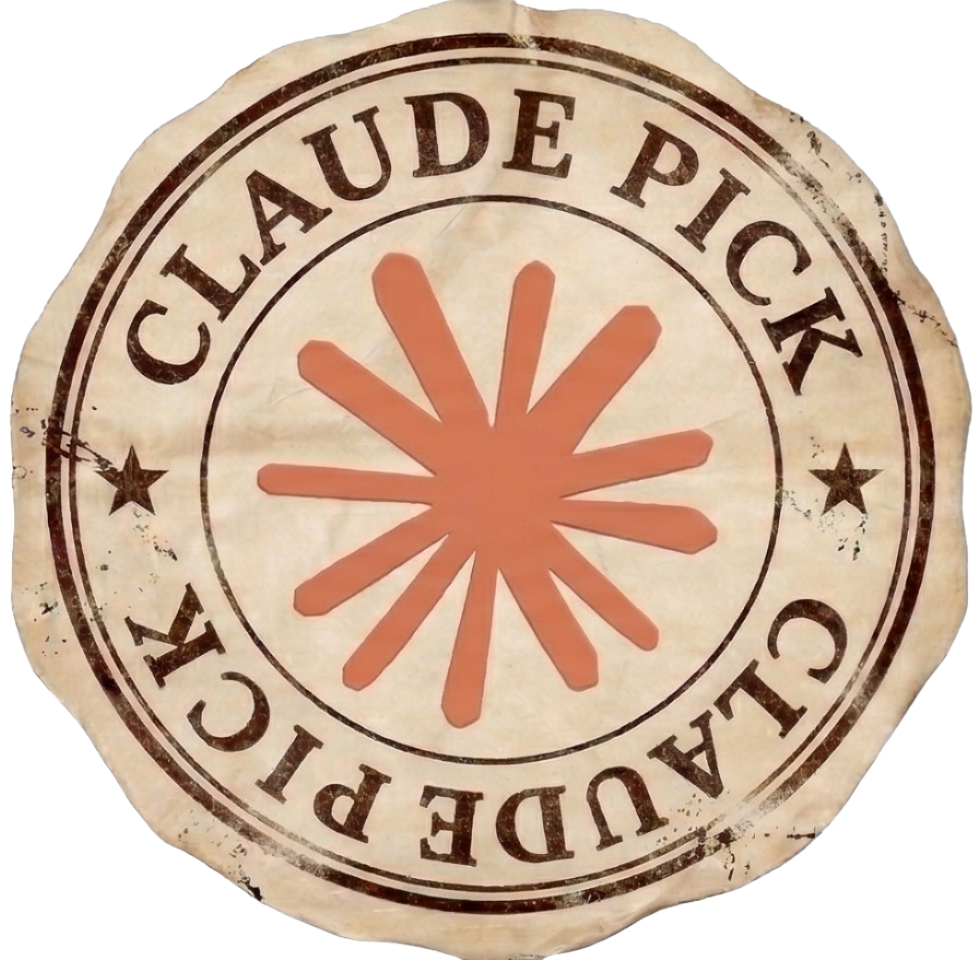
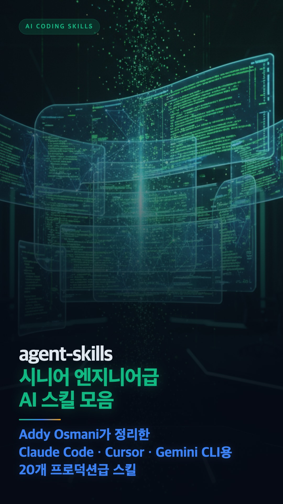
LLM 에이전트에게 대량의 텍스트를 전달하는 비효율성을 해결하기 위해 구글이 Agent-first 문서 포맷의 공식 Skills 저장소를 공개했다. 이 포맷은 에이전트가 특정 기술과 작업을 직관적으로 이해하고 실행하도록 구조화되어 있으며, 현재 Gemini API, BigQuery, GKE 등 구글 클라우드 핵심 제품과 보안, 비용 최적화 같은 아키텍처 스킬 13개가 초기 설정되어 있다.
핵심 포인트: 핵심 성과: 복잡한 파이프라인 구축 없이 에이전트에게 새로운 능력을 부여할 수 있는 표준화된 문서 포맷 제공으로 개발 효율성 증대, 초기 13개 스킬 탑재로 즉시 활용 가능한 기반 제공.
기타 (Others)
RLEnvs101: LLM 강화학습 프레임워크 실전 비교 가이드
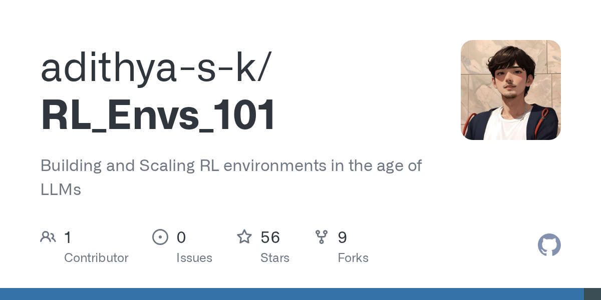
LLM 강화학습 환경 구축 시 프레임워크 선택의 어려움을 해결하기 위한 실무 가이드. PyTorch부터 NVIDIA까지 주요 6개 프레임워크를 수천 개 단위로 직접 스케일링하며 검증한 결과물로, HTTP vs in-process 구조적 차이, 프레임워크별 보상 아키텍처, 실제 운영 중 마주치는 치명적 단점과 한계를 다룬다. 이론이 아닌 실무 파이프라인 구축 과정에서의 구체적 문제 해결 경험을 제시한다.
핵심 포인트: 핵심 기여: 6개 주요 RL 프레임워크의 구조적 특성과 실제 성능 차이를 대규모 스케일링 실험으로 검증하고, 프레임워크 선택 시 고려해야 할 실무 함정과 제약사항을 구체적으로 문서화했다.
🔗 github.com/adithya-s-k/RL_Envs_101
GitHub
AI & RESEARCH
Tree-RAG: 계층적 문서 인덱싱으로 다중 세분성 검색 지원
기존 Tree-RAG 방법은 단일 문서 검색에만 최적화되어 있어 복수 문서에서의 효율성과 정확성이 낮다는 문제가 있다. 트리 기반 구조를 통해 문서를 계층적으로 인덱싱함으로써 다양한 세분성 수준에서 쿼리를 지원하고, 대규모 언어 모델과 외부 지식을 효과적으로 통합하여 RAG 성능을 향상시킨다.
핵심 포인트: 핵심 기여: 계층적 트리 구조를 활용한 다중 세분성 검색으로 문서 검색의 정확도와 효율성 개선, 복수 문서 처리 최적화.
논문 (Papers)
SubQ — 12M 토큰 LLM의 화려한 주장과 벤치마크 의혹
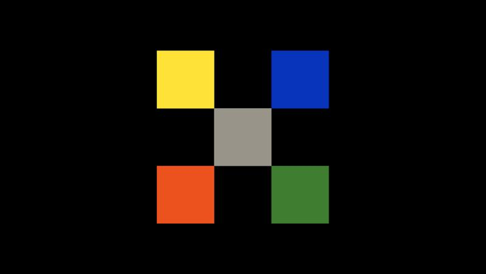
Subquadratic이 12M 토큰 컨텍스트 윈도우를 갖춘 SubQ 모델을 발표했으나, 발표 24시간 만에 AI 연구자들로부터 벤치마크 조작 의혹이 제기되었다. 회사는 SSA 구조로 기존 LLM 대비 52배 빠른 처리 속도와 Claude Opus의 5% 수준 비용을 주장했으나, 공개한 성능 표에서 Opus 4.6과 4.7 간 46점 급락, 실제 점수와 마케팅 카피의 불일치 등 내부 모순이 발견되면서 독립 검증 요구가 확산 중이다.
핵심 포인트: 핵심 의혹: 공식 벤치마크 표에서 Opus 4.7이 4.6보다 46점 하락(32.2점 vs 78.3점)하는 이상 현상 발견, MRCR v2에서 SubQ 65.9점 vs Opus 4.6 78.3점으로 12.4점 차이 존재하나 회사는 ‘잘 근접’이라 표현하며 정보 왜곡 논란 가중.
🔗 venturebeat.com/technology/miami-startup…
기타 (Others)
Recursive Multi-Agent Systems: 텍스트 없이 숨겨진 상태로 직접 통신하는 AI 에이전트
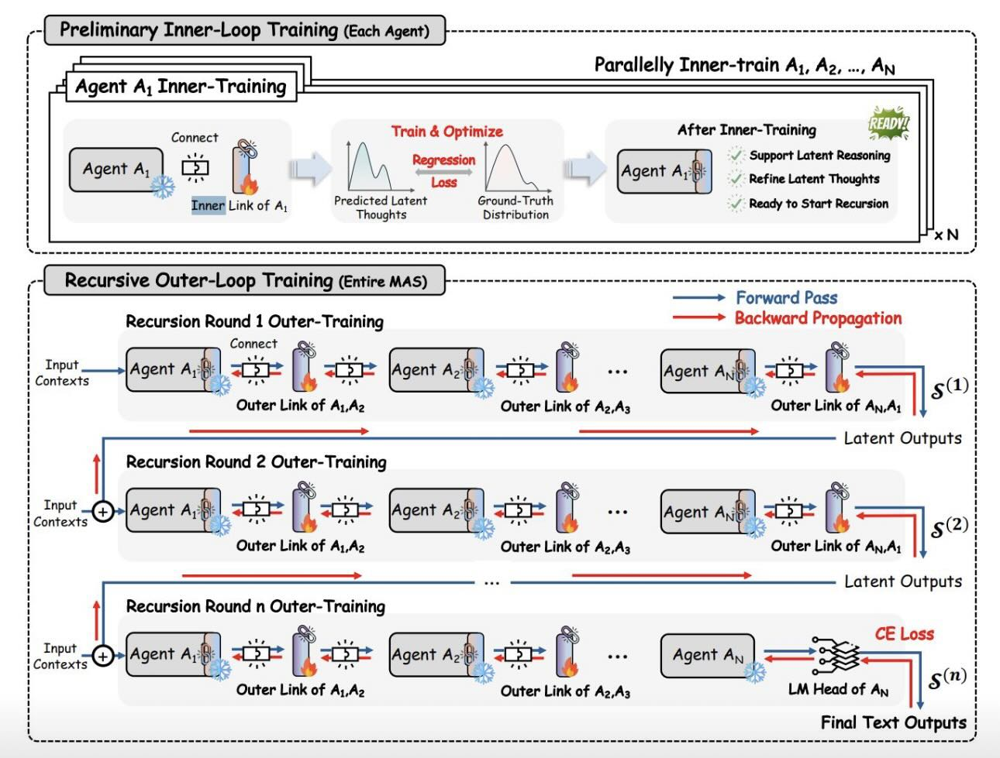
서로 다른 아키텍처의 대형언어모델들이 텍스트 디코딩 과정을 거치지 않고 숨겨진 상태(hidden states)를 직접 교환하는 멀티 에이전트 시스템 논문이 공개되었다. 전체 파라미터의 0.31%에 불과한 브릿지 모듈만 추가하여 Llama, Qwen, Mistral 등 이질적 모델들을 연결하는 방식으로 기존 미세조정 모델들을 능가하는 성능을 달성했으며, AI 간 통신 시 토큰 사용량을 최대 76% 감축했다.
핵심 포인트: 핵심 성과: 원본 모델 파라미터 변경 없이 0.31%의 경량 브릿지 모듈로 이질적 아키텍처 모델 연결, 기존 SFT/LoRA 미세조정 모델 대비 성능 우위, 에이전트 간 통신에서 토큰 사용량 최대 76% 감소.
논문 (Papers)
Gemma 4: 추론 속도 최대 3배 향상된 생성 AI 모델
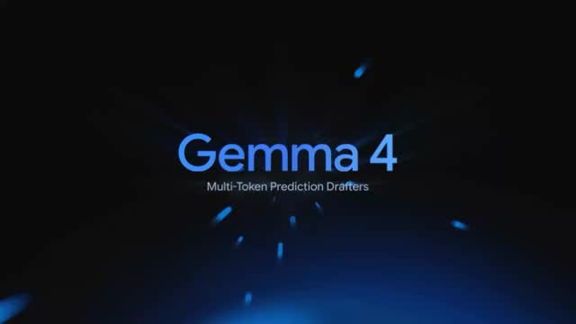
로컬 환경에서 LLM 생성 속도가 느린 문제를 해결하기 위해 구글이 출시한 Gemma 4는 Multi-Token Prediction 기반 Speculative decoding 기술을 적용하여 토큰 생성 속도를 최대 3배 향상시켰다. 모델의 추론 능력과 결과물 퀄리티는 유지하면서 순수하게 생성 속도만 개선하였으며, 출시 첫날부터 transformers, MLX, vLLM 환경에서 즉시 사용 가능하고 Apache 2.0 라이선스로 제공된다.
핵심 포인트: 핵심 성과: Multi-Token Prediction drafters를 활용한 Speculative decoding으로 토큰 생성 속도 최대 3배 향상, 품질 타협 없이 순수 성능 개선 달성. 주요 장점: Day-0부터 주요 프레임워크(transformers, MLX, vLLM)에서 즉시 실행 가능하며 Apache 2.0 라이선스로 배포.
🔗 huggingface.co/collections/google/gemma-4
기타 (Others)
Gemma 4: 다중 토큰 예측으로 추론 속도 3배 향상

LLM 추론 속도의 병목 현상을 해결하기 위해 구글이 Gemma 4를 위한 다중 토큰 예측(MTP) 기법을 공개했다. 경량 보조 모델이 여러 토큰을 미리 예측하면 주 모델이 이를 검증하는 추측 해독 방식으로, 답변 품질과 추론 능력은 유지하면서 생성 속도를 최대 3배까지 향상시킨다. 기기의 유휴 연산 자원을 활용해 구조적으로 병목을 해결하며, 주요 오픈소스 도구에서 바로 사용 가능하다.
핵심 포인트: 핵심 성과: 다중 토큰 예측 기법으로 생성 속도를 최대 3배 향상시키면서 답변 품질과 추론 능력은 완전히 유지. 개인용 컴퓨터와 모바일 기기에서도 고성능 AI 구동이 가능해진다.
🔗 blog.google/innovation-and-ai/technology…
블로그 (Blog)
Stanford CS336 기반 LLM 대학원 강의: 인하대 안남혁 교수 오픈소스 공개
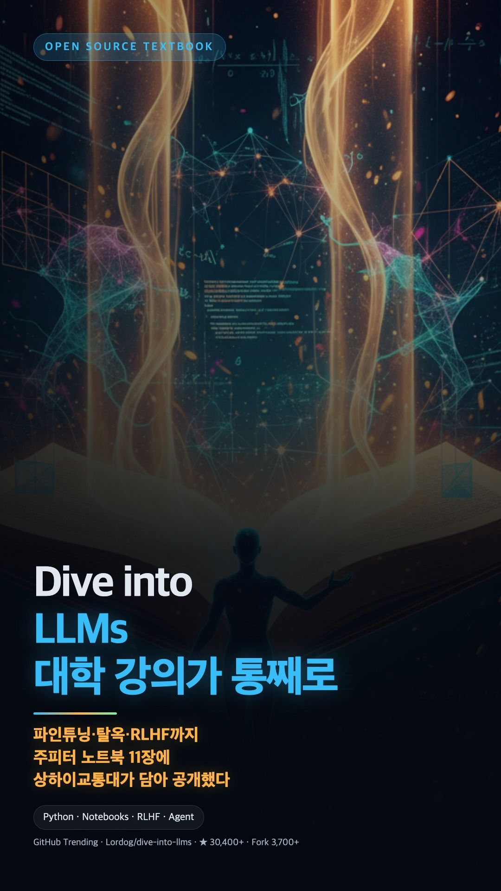
LLM의 기초 이론을 넘어 실무 수준의 심화 학습을 원하는 개발자와 연구자들이 마땅한 자료를 찾기 어려운 문제를 해결한다. 인하대학교 안남혁 교수가 스탠포드 CS336을 기반으로 구성한 대학원급 LLM 강의 자료를 완전 오픈소스로 공개했으며, 토큰화와 임베딩 같은 기초부터 최신 모델 구조, GPU 병렬화, vLLM 인퍼런스, RL 기반 추론까지 체계적으로 커버한다.
핵심 포인트: 핵심 기여: 단순 개념 설명을 넘어 GPU 병렬화, vLLM 인퍼런스, RL 기반 Reasoning 등 최신 LLM 시스템까지 다루는 고품질 대학원급 강의 자료를 무료 공개하여 심화 학습의 진입장벽을 대폭 낮춤.
🔗 youtube.com/playlist?list=PLUfbC589u-FSwn…
기타 (Others)
SKILL-RAG: LLM 자기 지식으로 RAG 성능을 높이는 프레임워크
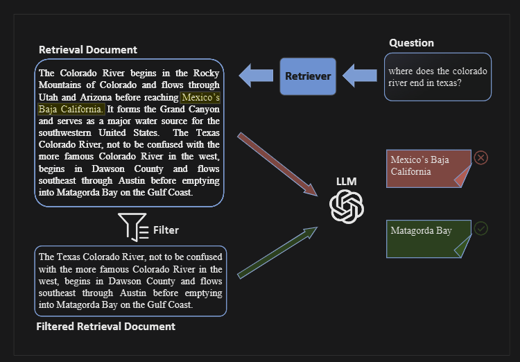
기존 RAG 시스템에서 LLM이 검색 결과만 참고하고 전체 코퍼스 구조나 미탐색 영역을 인식하지 못하는 구조적 맹점이 발생한다. SKILL-RAG 프레임워크는 LLM의 자기 지식(internal knowledge)을 활용하여 이 문제를 해결하고, RAG 성능을 크게 향상시킨다.
핵심 포인트: 핵심 기여: LLM의 자체 지식을 RAG 시스템에 통합하여 검색 결과의 신뢰도 판단, 미탐색 영역 식별, 코퍼스 구조 이해 능력을 동시에 개선한다.
🔗 digitalbourgeois.tistory.com/m/3047
기타 (Others)
Waldo — AI 에이전트 속도를 10배 높인 소형 언어모델 기반 검색 전문화
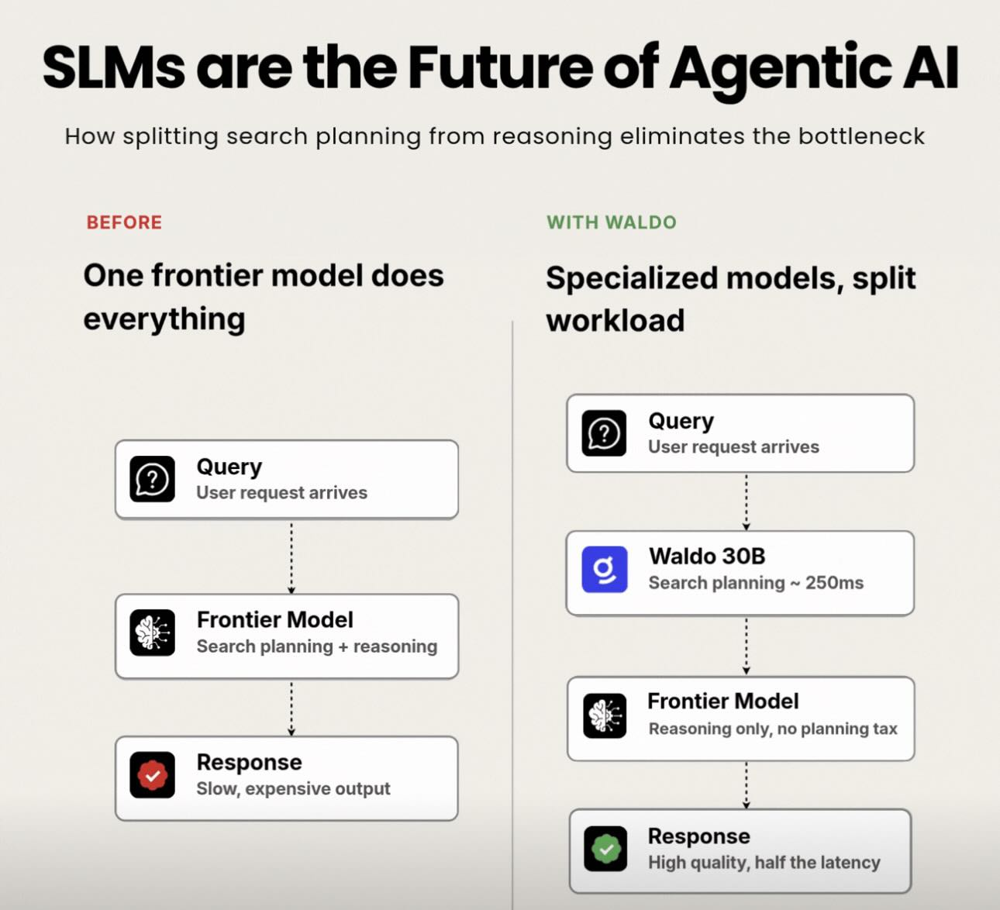
기존 AI 에이전트는 무거운 대규모 언어모델이 검색과 추론을 모두 담당하느라 응답 속도가 느렸다. Glean의 Waldo는 이 병목을 제거하기 위해 검색 작업을 30B 규모의 소형 언어모델에 전담시키고, 대규모 모델은 추론 작업에만 집중하도록 분리했다. 이 아키텍처 개선으로 응답 시간을 3초에서 250ms로 단축했으며, 토큰 사용량도 약 25% 감소시켰다.
핵심 포인트: 핵심 성과: 응답 시간 12배 단축(3초→250ms), 토큰 사용량 25% 감소, 지연시간 50% 감소를 통해 프로덕션 레벨의 실무 AI 에이전트 배포 가능성을 입증.
기타 (Others)
희소 벡터 검색: 한국어 특화 파인튜닝으로 높인 정보 검색 성능

정보 검색 분야에서 키워드 검색에서 벡터 검색을 거쳐 희소 벡터 검색으로 진화하고 있는 가운데, 한국어 특화 모델의 부족 문제를 해결하기 위해 약 한 달간 희소 벡터 모델을 파인튜닝한 실험을 진행했다. 기존 밀집 임베딩 기반 검색 대비 리콜 성능이 향상된 결과를 도출했으며, 이를 통해 희소 벡터 검색이 한국어 정보 검색에서 더 효과적임을 입증했다.
핵심 포인트: 핵심 성과: 한국어 특화 희소 벡터 모델 파인튜닝을 통해 기존 밀집 임베딩 기반 검색 대비 높은 리콜 성능을 달성하고, 정보 검색 분야의 최신 트랜드인 희소 벡터 기법의 한국어 적용 가능성을 검증했다.
기타 (Others)
DEVTOOLS & OPEN SOURCE
gc-tree — AI 코딩 에이전트를 위한 글로벌 컨텍스트 관리 도구
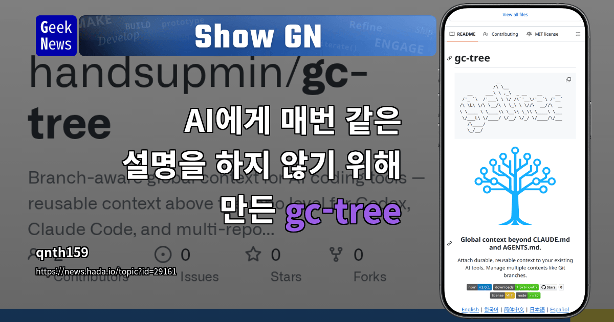
AI 코딩 에이전트를 사용할 때 세션이 변경되거나 컨텍스트가 압축되면 작업 방식, 팀 용어, 저장소 간 연결 관계 등의 배경 정보를 반복적으로 입력해야 하는 문제가 발생한다. gc-tree는 이러한 글로벌 컨텍스트 정보를 체계적으로 관리하여 세션 간 일관된 작업 환경을 유지하고, 에이전트가 프로젝트의 전체 맥락을 파악한 상태에서 효율적으로 작동하도록 지원하는 도구이다.
핵심 포인트: 핵심 기여: 세션 간 컨텍스트 손실 문제를 해결하여 AI 에이전트의 작업 효율성을 높이고, CLAUDE.md 및 AGENTS 같은 표준화된 문서 형식을 통해 팀 전체의 일관된 에이전트 관리를 가능하게 한다.
🔗 share.google/RYduUSGRaq1erKVFL
기타 (Others)
Lazyweb — AI 코드 생성의 디자인 품질 향상을 위한 무료 레퍼런스 툴
AI 모델이 생성한 코드의 디자인 품질이 떨어지는 문제를 해결하기 위해 Lazyweb이 출시되었다. 듀오링고 출신 개발자가 개발한 이 도구는 25만 개 이상의 실제 앱과 웹 화면 데이터를 보유하고 있으며, Claude나 Codex 같은 AI 모델에 MCP를 통해 직접 연결되어 사용할 수 있다. 완전 무료이며 유료 구독이나 사용량 제한이 없어 AI 에이전트의 디자인 컨텍스트 제공 문제를 근본적으로 해결한다.
핵심 포인트: 핵심 성과: 25만 개 이상의 실제 앱과 웹 화면 데이터를 기반으로 AI 모델에 직접 연동되는 무료 디자인 레퍼런스 도구 제공, 사용량 제한 없이 즉시 MCP로 통합 가능
기타 (Others)
OpenScreen — 월 29달러 유료 화면 녹화 도구를 대체하는 무료 오픈소스
Screen Studio 같은 고가의 화면 녹화 소프트웨어는 월 29달러의 구독료를 요구하며 Mac 전용이라는 한계가 있다. OpenScreen은 이를 완벽히 대체하는 무료 오픈소스 솔루션으로, Windows와 Mac을 모두 지원하며 워터마크 없이 상업적 이용도 가능하다. 녹화 시 자동 줌인, 모션 블러, 그림자, 둥근 모서리 등 고급 시각 효과가 자동 적용되어 프리미엄급 결과물을 무료로 제공한다.
핵심 포인트: 핵심 성과: 월 29달러 구독료가 필요했던 프리미엄 기능을 완전히 무료로 제공하며, 크로스플랫폼 지원과 워터마크 제거로 상업적 활용까지 가능하게 하였다.
🔗 github.com/siddharthvaddem/openscreen
GitHub
Claude Code — 개발자 용어를 한국어로 번역하는 AI 스킬
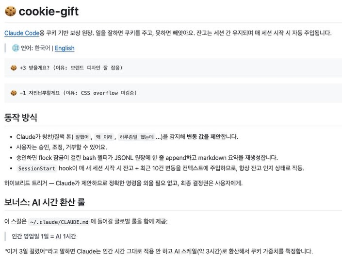
Git, commit, push 등 개발 용어의 높은 진입장벽이 비개발자와의 협업을 어렵게 만드는 문제를 해결하기 위해, 한국 개발자가 Claude Code 스킬을 만들었다. 이 도구는 영문 개발 용어를 한국어로 번역하고, 17개의 에러 메시지를 한국어로 제공하며, 위험한 명령을 자동으로 차단한다. 기술 격차는 학습보다 접근성 개선으로 좁힐 수 있다는 철학을 구현한 사례다.
핵심 포인트: 핵심 기여: commit을 ‘세이브’, push를 ‘올리기’로 번역하고 17개 에러 메시지 한국어화로 비개발자 진입장벽 제거. 도구 설계를 가장 약한 사용자 기준으로 함으로써 팀 생산성과 협업 효율 향상.
🔗 github.com/jangfolk/claude-cookie-gift/
GitHub
Claude Code — AWS 서버리스 개발을 위한 AI 플러그인 출시

Claude Code 사용자가 AWS 서버리스 아키텍처 구축 시 패턴 이해 부족과 복잡한 설정으로 인한 개발 속도 저하 문제를 겪고 있다. Anthropic이 출시한 AWS Serverless 플러그인은 Lambda, API Gateway, EventBridge, Step Functions 등 주요 서비스에 대한 깊은 이해를 바탕으로 SAM 또는 CDK 기반 스캐폴딩, 이벤트 소스 구성, 콜드 스타트 디버깅, 상태 지속성 관리 등을 자동화하여 개발 생산성을 크게 향상시킨다.
핵심 포인트: 핵심 기여: Lambda, API Gateway, EventBridge, Step Functions, DynamoDB Streams, SQS, Kinesis 등 AWS 서버리스 서비스를 지원하며, TypeScript 기반 CDK 스캐폴딩, 콜드 스타트 최적화, 관찰성 디버깅 기능을 통합하여 서버리스 애플리케이션 개발 시간을 단축한다.
🔗 claude.com/plugins/aws-serverless
기타 (Others)
Tolaria — LLM 위키 개념을 구현한 오프라인 마크다운 기반 지식 관리 도구
개인 지식 관리 시스템을 구축할 때 클라우드 종속성과 구독료 문제를 해결하기 위해 Tolaria가 출시되었다. 이 Mac 전용 앱은 마크다운 파일 기반으로 완전 오프라인에서 동작하며, Git 버전 관리를 기본 지원하고 어떤 텍스트 에디터에서도 자유롭게 열 수 있다. LLM에 제공할 컨텍스트 문서 작성이나 개인 세컨드 브레인 구축에 최적화되어 설계되었다.
핵심 포인트: 핵심 기여: 데이터 종속성 완전 제거, Git 기반 버전 관리 기본 지원, 마크다운 포맷으로 도구 독립적 운영 가능, Claude/Gemini 등 LLM과의 컨텍스트 전달 최적화
🔗 github.com/refactoringhq/tolaria
GitHub
google-surf-mcp — API 키 없는 Google 검색 MCP 도구
Google 검색 결과만으로는 부족한 상황에서 검색 결과와 URL 본문 추출을 동시에 처리해야 하는 문제가 있다. google-surf-mcp는 API 키 없이 Google 검색을 MCP 도구처럼 활용하면서 검색, 병렬 처리, URL 본문 마크다운 추출, 검색과 추출을 한 번에 수행하는 네 가지 기능을 제공한다. Node 18 이상과 Chrome/Chromium만 있으면 npx google-surf-mcp로 즉시 사용할 수 있다.
핵심 포인트: 핵심 성과: API 키 필수 요구 없이 구글 검색과 URL 본문 추출을 MCP 도구로 통합하여 한 번에 처리 가능하며, searchextract 기능으로 검색 결과부터 페이지 본문까지 전체 워크플로우를 단순화했다.
🔗 github.com/HarimxChoi/google-surf-mcp
GitHub
Claude Code — 멀티 세션 동시 작업으로 개발 오케스트레이션 패러다임 전환
기존 단일 채팅 기반 AI 코딩 도구는 한 번에 한 작업만 처리하며 결과를 기다려야 하는 문제가 있었다. Claude Code의 새로운 데스크톱 업데이트는 사이드바에서 여러 세션을 동시에 운영하고, 활성 작업 기준으로 우선순위를 관리하며, 부수 질문은 독립적인 사이드 채팅으로 처리함으로써 개발자를 작업 지향적 오케스트레이터로 전환한다. Pro/Max/Team/Enterprise 모든 플랜에서 즉시 사용 가능하며, CLI 플러그인과 Mac SSH 통합으로 팀 표준화까지 지원한다.
핵심 포인트: 핵심 기여: 상태/프로젝트별 필터링으로 사이드바 자동 정리, PR 머지 시 자동 아카이빙, Verbose/Normal/Summary 3가지 뷰 모드로 역할별 정보 밀도 조절, 메인 작업 분산 없이 곁가지 질문을 처리하는 사이드 채팅(⌘+;) 분리로 작업 효율성 극대화.
🔗 threads.com/@realailab_core/post/DX1eh0Wi…
기타 (Others)
CocoIndex — 실시간 RAG 데이터 갱신 엔진
기존 RAG 시스템은 임베딩 모델이나 청킹 방식 변경 시 전체 데이터를 재처리해야 하는 비효율성이 있다. CocoIndex는 Rust 기반 엔진에서 Python으로 동작하며, 영향받는 데이터만 선택적으로 재작업하는 증분 업데이트 방식으로 이 문제를 해결한다. Slack, PDF, 코드베이스 등 다양한 소스를 실시간으로 연동하여 지연 없이 에이전트 컨텍스트를 최신화하고, 10분 내 프로덕션 레벨 에이전트 배포를 가능하게 한다.
핵심 포인트: 핵심 성과: 무거운 야간 배치 작업 제거, 선택적 데이터 재처리로 갱신 효율 극대화, 10분 이내 프로덕션 에이전트 구성 완료.
🔗 github.com/cocoindex-io/cocoindex
GitHub
Claude API — 4개 개발 도구에 통합되며 SDK 사용성 개선

개발자가 Claude API를 사용할 때 deprecated 경고나 모델 업그레이드 시 코드를 일일이 수정해야 하는 불편함이 있었다. 앤트로픽이 Claude API 스킬을 CodeRabbit, JetBrains Resolve AI, Warp 등 4개 개발 도구에 추가하여 모델명과 파라미터 캐싱이 자동으로 따라가도록 개선했다. 이제 캐시 히트율 개선이나 최신 모델 업그레이드 명령을 한 줄로 완료할 수 있다.
핵심 포인트: 핵심 성과: Claude API 스킬이 주요 개발 도구 4곳에 통합되어 모델 관리와 캐싱 파라미터가 자동 적용되므로 SDK 사용 난이도 감소 및 개발 생산성 향상
🔗 claude.com/blog/claude-api-skill
기타 (Others)
Quarkdown — 마크다운에 함수 기능을 더한 조판 언어
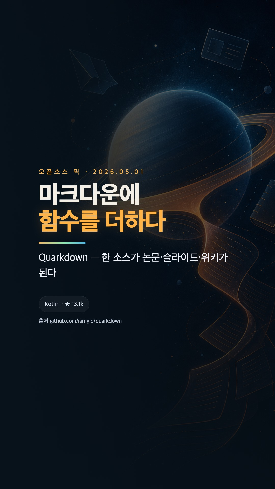
마크다운으로 작성한 문서를 여러 형식으로 동시에 출력해야 할 때의 번거로움을 해결하는 조판 언어. Quarkdown은 CommonMark와 GFM을 확장해 마크다운 파일 안에서 직접 분기, 반복, 변수 선언, 사용자 정의 함수를 평가할 수 있다. 단일 .qd 소스 하나로 plain 문서, paged 논문, reveal.js 슬라이드, docs 위키를 한 번에 생성하며, VS Code 확장과 REPL을 제공한다.
핵심 포인트: 핵심 기여: 한 소스에서 여러 출력 형식을 동시 생성 가능하며, LaTeX, Typst, MDX, AsciiDoc 대비 마크다운의 가독성을 유지하면서 책·논문·위키 출력을 단일 도구에 통합. Kotlin으로 작성된 오픈소스 프로젝트로 GitHub 13,100개 이상의 스타 획득.
GitHub
Onyx — 50개 사내 앱 연동하는 오픈소스 AI 검색 플랫폼
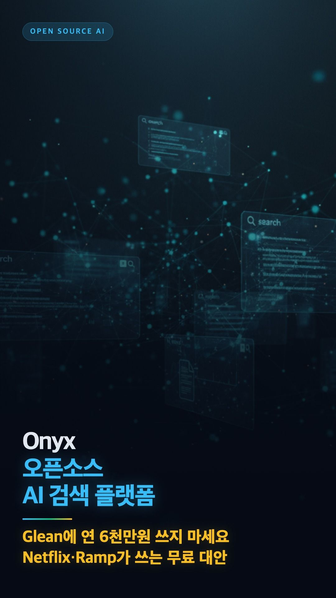
기업 내부에서 AI 챗봇을 구축할 때 여러 데이터 소스를 개별적으로 연동하고 관리해야 하는 복잡성이 문제다. Onyx는 Slack, 구글 드라이브, GitHub 등 50개 이상의 사내 앱을 한 번에 연결하고, Agentic RAG 기술로 단순 검색을 넘어 자동으로 깊이 있는 리서치를 수행한다. 로컬 및 상용 LLM을 자유롭게 선택 가능하며, Docker로 내부망에 배포하여 데이터 유출 위험을 제거한다.
핵심 포인트: 핵심 기여: 50개 이상의 엔터프라이즈 앱 통합 연결, Agentic RAG 기반 자동 딥 리서치 수행, 다양한 LLM 지원 및 온프레미스 배포로 데이터 보안 완보
🔗 github.com/onyx-dot-app/onyx
GitHub
LangChain Harness Profiles — 모델별 자동 프롬프트 최적화
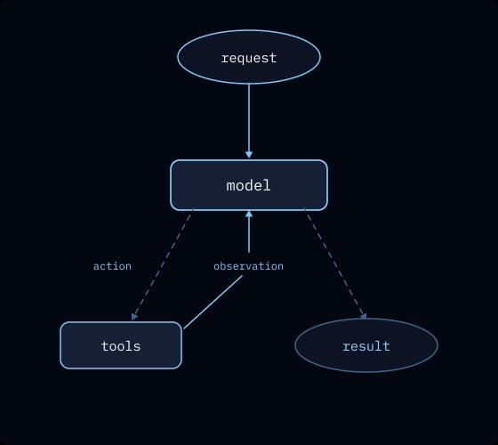
멀티 모델 환경에서 모든 AI 모델에 동일한 프롬프트를 사용할 때 발생하는 성능 저하 문제를 해결한다. LangChain의 Harness Profiles는 OpenAI, Claude, Gemini 등 각 모델의 특성에 맞춰 프롬프트와 도구를 자동으로 최적화하여 벤치마크 점수를 10~20점 향상시킨다. 이를 통해 모델별 수동 튜닝에 소요되던 개발 시간을 대폭 단축할 수 있다.
핵심 포인트: 핵심 성과: 기본 프로필 적용만으로 벤치마크 점수 10~20점 향상, 모델별 자동 최적화로 멀티 모델 환경의 개발 효율성 대폭 개선
🔗 langchain.com/blog/tuning-deep-agents-dif…
기타 (Others)
Claude Code — API 마이그레이션과 프롬프트 캐싱 자동화 스킬
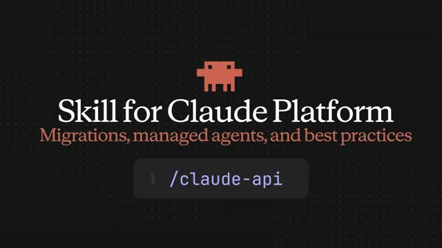
Claude API를 사용하는 개발자들이 새로운 모델로 마이그레이션하거나 프롬프트 캐싱을 설정할 때마다 반복적인 코드 수정 작업을 수행해야 했다. 앤트로픽은 Claude Code에 전용 스킬을 탑재해 터미널 명령어 하나로 Opus 4.7 마이그레이션, 프롬프트 캐싱 설정, 관리형 에이전트 연동을 자동 처리한다. 실제 개발자들은 이 스킬로 설정 비용을 40달러에서 8달러로 80% 절감했으며, 사람이 놓치기 쉬운 캐시 오류까지 자동 감지한다.
핵심 포인트: 핵심 성과: 프롬프트 캐싱 설정 비용 80% 감축(40달러→8달러), 캐시 오류 자동 감지로 개발 안정성 향상, 터미널 한 줄 명령으로 전체 마이그레이션 자동화 달성
🔗 claude.com/blog/claude-api-skill
기타 (Others)
PRODUCT & INDUSTRY
PwC: AI를 활용한 계약 분석 자동화
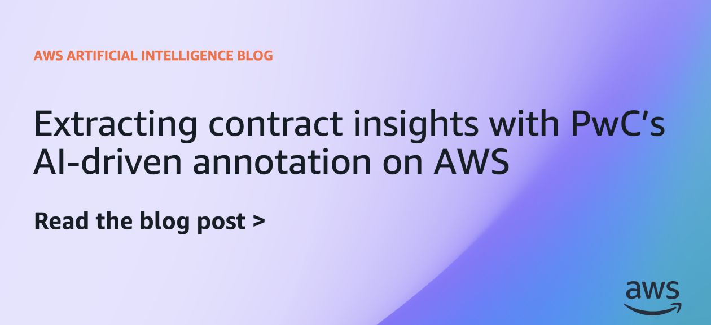
법률, 규정 준수, 조달 팀이 길고 구조화되지 않은 계약 분석에 상당한 시간을 소비하는 문제가 발생하고 있다. PwC의 전문가들은 AI 기술을 활용하여 계약 내 중요한 통찰력을 효율적으로 추출하고 분석 시간을 단축하는 솔루션을 제시한다. 이를 통해 조직은 계약 관리 프로세스를 자동화하고 업무 생산성을 향상시킬 수 있다.
핵심 포인트: 핵심 기여: AI 기반 계약 분석으로 법무, 규정 준수, 조달 팀의 업무 시간을 대폭 단축하고 복잡한 계약 문서에서 핵심 정보 추출의 정확도를 높인다.
🔗 aws.amazon.com/blogs/machine-learning/ext…
기타 (Others)
Sun Finance: Amazon Bedrock으로 AI 기반 ID 확인 파이프라인 구축
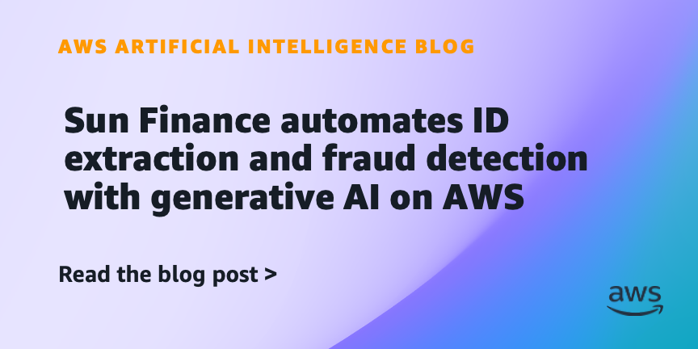
신원 확인 문서 처리에서 추출 정확도 저하와 높은 처리 비용이 문제인 상황에서 Sun Finance가 Amazon Bedrock, Amazon Textract, Amazon Rekognition을 활용한 AI 기반 IDV 솔루션을 개발했다. 이 통합 파이프라인은 추출 정확도를 79.7%에서 90.8%로 향상시키고, 문서당 비용을 91% 절감하며, 전체 처리 시간을 단축시켜 엔터프라이즈급 ID 확인 서비스의 효율성과 경제성을 동시에 달성했다.
핵심 포인트: 핵심 성과: 추출 정확도 79.7%에서 90.8%로 11.1%포인트 개선, 문서당 비용 91% 절감, 처리 시간 단축을 통한 엔드-투-엔드 IDV 파이프라인 최적화 달성
🔗 aws.amazon.com/blogs/machine-learning/sun…
기타 (Others)
Code with Claude — Anthropic의 개발자 컨퍼런스를 유튜브 미디어로 전환
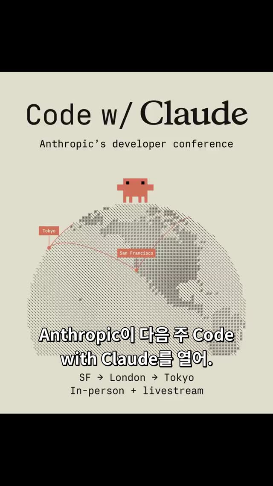
Anthropic이 개발자 대상 컨퍼런스 Code with Claude를 샌프란시스코, 런던, 도쿄 세 도시에서 동시 개최하며 규모를 확대했다. 단순한 제품 발표회를 넘어 공식 유튜브 채널을 통해 기업 사례 연구, 신기능 소개, 외부 개발자 인터뷰, 문화 콘텐츠까지 포함한 통합 미디어 패키지로 제공한다. 모든 세션을 라이브와 녹화로 무료 공개하며 개발자 커뮤니티와의 직접 소통을 강화하는 전략을 보여준다.
핵심 포인트: 핵심 전략: 3개 대륙 3개 도시 확대 개최, 유튜브 채널을 통한 52개 영상 공개(Datadog, GitHub, Vercel 등 외부 기업 사례 포함), 기능 발표를 넘어 종합 미디어 플랫폼으로 전환하여 비개발자 대중까지 도달 범위 확대.
기타 (Others)
Claude Managed Agents — AI 에이전트 자율 학습과 원클릭 배포 시대 개막
기업의 AI 에이전트 프로덕션 배포 과정에서 수개월의 인프라 작업이 병목이 되던 문제를 해결한다. 앤트로픽의 Claude Managed Agents는 Dreaming(자가 학습)과 Outcomes Loop(자동 평가 개선) 기능을 통해 에이전트가 백그라운드에서 과거 작업을 분석하고 스스로 패턴을 수정하며 성능을 향상시킨다. 작업과 도구, 가드레일만 설정하면 며칠 내 배포가 가능해져 Notion, Asana, Rakuten 등이 이미 실무 에이전트를 구축했다.
핵심 포인트: 핵심 성과: 에이전트 배포 시간을 수개월에서 수일로 단축했으며, 인간 검토 병목 현상을 제거하고 AI가 자동으로 성능을 개선하는 복리 구조를 구현했다.
기타 (Others)
Google Gemini: 파일 생성 및 다운로드 기능 공식 출시

Google Gemini가 기존에 부족했던 파일 생성 및 내보내기 기능을 공식 출시했다. 사용자는 이제 프롬프트 지시만으로 텍스트, PDF, Word, 엑셀, Google 문서·스프레드시트·프레젠테이션, LaTeX, 마크다운 형식의 파일을 직접 생성하고 다운로드할 수 있다. 기존 샌드박스 환경에서 Python 코드 실행은 가능했으나 결과물을 파일로 내보낼 수 없었던 한계를 해소하며, Gemini 생태계의 생산성을 크게 향상시킨다.
핵심 포인트: 핵심 성과: Gemini 웹·모바일 앱에서 6개 이상의 파일 형식 지원 및 자유로운 파일 생성·관리 기능 구현. 다만 기존 문서 덮어쓰기 편집은 미지원하며 수정 시 새 파일로 복사 생성.
기타 (Others)
Claude — API 키 관리 없이 클라우드 IAM으로 인증
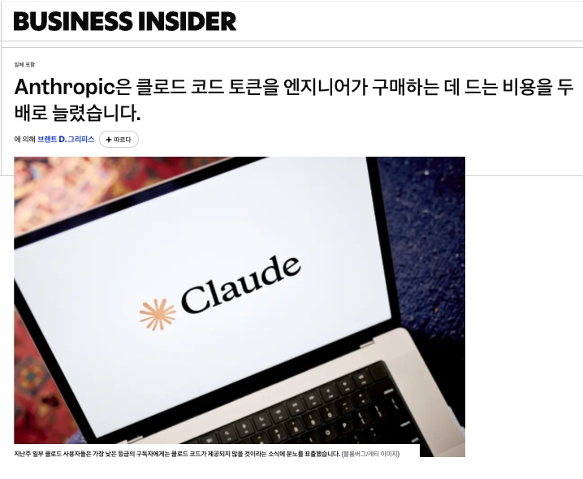
API 키 유출이나 주기적인 키 관리로 인한 보안 부담이 있는 기업들의 문제를 해결하기 위해 앤트로픽이 Claude 플랫폼에 키리스 인증 기능을 도입했다. AWS, GCP, Azure 등 기존 클라우드 권한이나 OIDC 토큰만으로 Claude에 직접 접근할 수 있게 되어 API 키 발급 및 관리 절차를 완전히 제거했다.
핵심 포인트: 핵심 성과: 기존 클라우드 IAM 및 OIDC 토큰 기반 인증으로 API 키 관리 부담 제거, 주기적 키 교체로 인한 인프라 운영 비용 단번에 해결.
🔗 platform.claude.com/docs/en/build-with-cl…
기타 (Others)
Refero Styles — AI 에이전트를 위한 2,000개 제품의 디자인 시스템
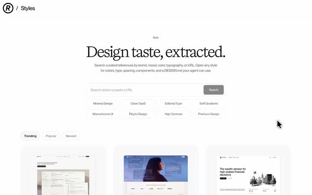
AI 에이전트에게 디자인 참고 자료를 제공할 때 일관성 있는 디자인 가이드라인의 부재가 문제다. Refero Styles는 세계 최고의 제품 2,000개에서 추출한 DESIGN.md 파일을 제공하여 색상, 타이포그래피, 간격, 레이아웃 등 핵심 디자인 요소를 AI에게 전달할 수 있게 한다. 이를 통해 사용자는 글로벌 수준의 디자인 패턴을 참고하여 자신만의 디자인 가이드를 구축할 수 있다.
핵심 포인트: 핵심 기여: 2,000개 글로벌 제품의 구조화된 디자인 메타데이터를 AI 에이전트 학습용으로 체계화하여 제공하며, 색상, 타이포그래피, 간격, 레이아웃 등 디자인 시스템의 핵심 요소를 표준화된 형식으로 추출했다.
기타 (Others)